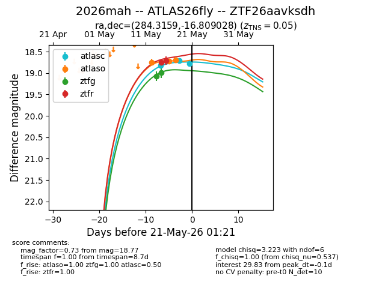
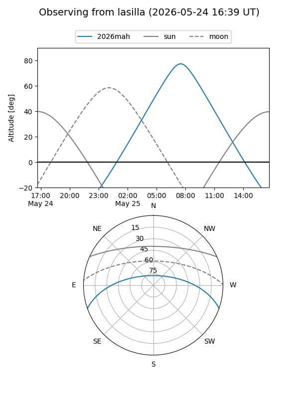
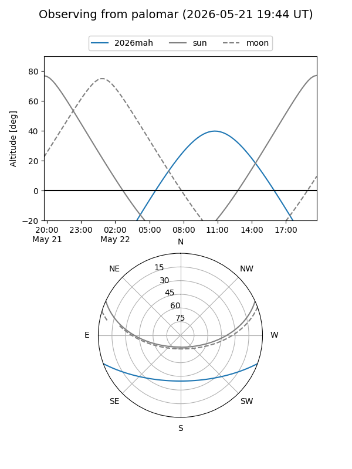
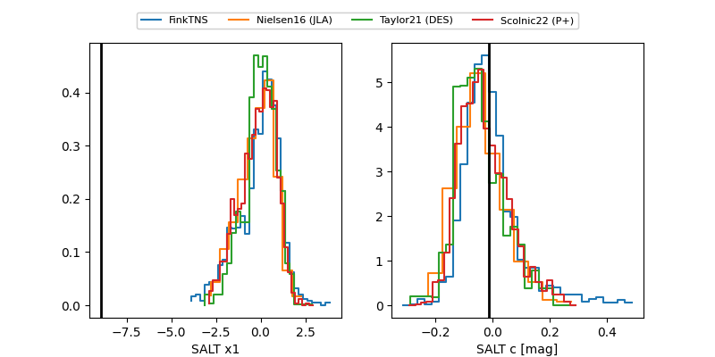

2026mah
Target 2026mah at 2026-05-21 01:22
Aliases and brokers:
FINK: link
Lasair: link
ALeRCE: link
TNS: link
YSE: link
alt names
ZTF26aavksdh (ztf,fink_ztf)
2026mah (tns,yse)
ATLAS26fly (atlas)
Coordinates:
equatorial (ra, dec) = 284.3159,-16.80903
equatorial (HMS+DMS) = 18:57:15.81,-16:48:32.50
galactic (l, b) = (18.5000,-8.83076)
Flags:
Photometry:
last atlasc=18.77, atlaso=18.69, ztfg=18.99, ztfr=18.71
3 atlasc, 3 atlaso, 2 ztfg, 2 ztfr detections
Lightcurve

Visibility


Additional plots
